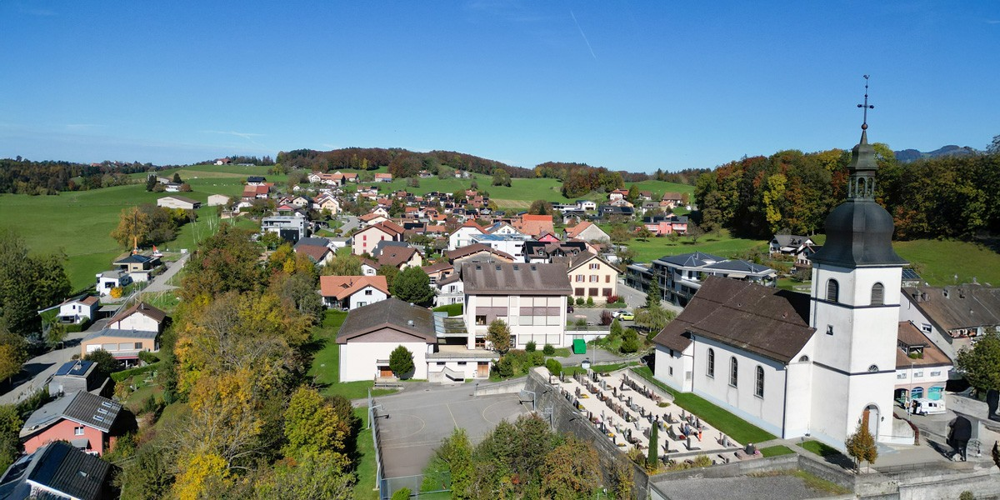
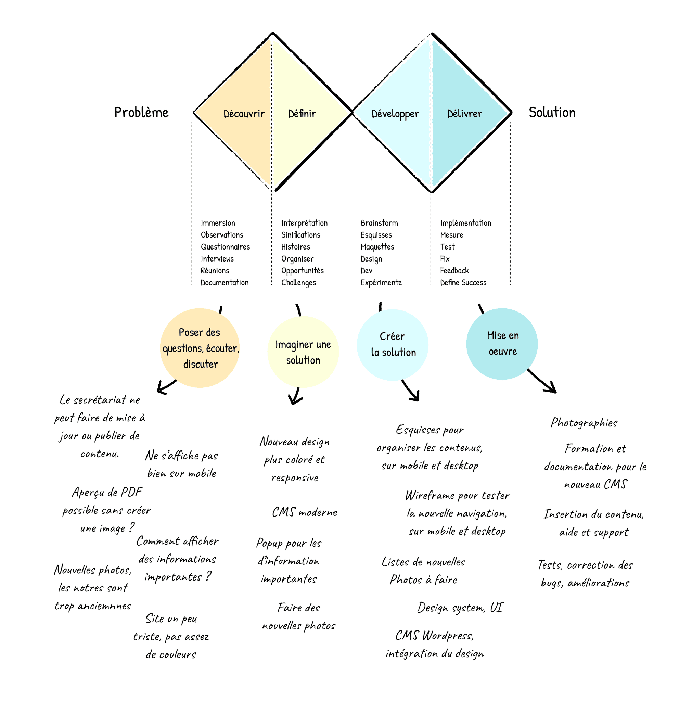
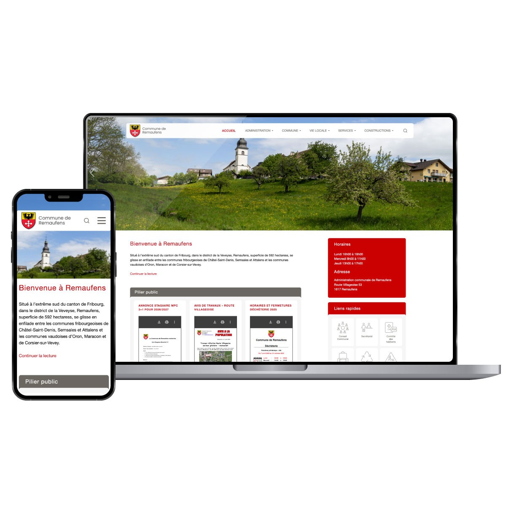

Présentation
Après avoir conçu les sites des communes voisines de St-Martin, Semsales, Attalens, Granges et Bossonnens, j’ai été mandaté pour piloter la refonte complète du site de Remaufens.
Pour la Commune de Remaufens, l’objectif principal était de moderniser leur présence en ligne tout en facilitant l’accès à l’information pour les citoyennes et citoyens. Ce mandat a inclus l’accompagnement de l’administration dans la structuration des contenus, la mise en place d’un back-office simple d’utilisation et la création d’un site clair, accessible et adapté aux besoins du service communal.
Problème à résoudre
L’ancien site ne reflétait plus l’image de la commune, était difficile à maintenir et ne répondait pas pleinement aux attentes des différents publics (habitants, associations, visiteurs). L’architecture de l’information était peu claire et la mise à jour du contenu dépendait trop d’interventions externes.
Objectifs principaux
- UX/UI Design : Concevoir une interface claire, conviviale et accessible à tous les citoyens.
- Autonomie du client : Permettre à la commune de gérer son contenu en interne via un CMS adapté.
- Organisation de l’information : Structurer les contenus pour que chaque usager trouve rapidement ce dont il a besoin.
Mon rôle
En tant que UX/UI Designer et Web Project Manager, j’ai pris en charge :
- Project management : cadrage avec les autorités communales, définition des priorités, planification et suivi jusqu’à la mise en ligne.
- UX/UI Design : architecture de l’information, conception des parcours principaux, maquettes et design de l’interface en respectant les besoins des habitants et les standards d’accessibilité.
- Front-end Development : réalisation d’un thème WordPress personnalisé, performant et évolutif, adapté aux spécificités de la commune.
Méthode : le Double Diamond adapté au projet
Pour structurer le projet, j’ai adapté le modèle du Double Diamond à la refonte de ce site : Découvrir, Définir, Développer et Délivrer.
- Découvrir : entretiens avec l’administration, analyse de l’existant, recensement des besoins des habitants et des futurs contributeurs au contenu.
- Définir : priorisation des contenus, création de l’architecture de l’information, définition des parcours clés (habitants, associations, visiteurs).
- Développer : wireframes, maquettes UI, intégration front-end et mise en place du thème WordPress sur mesure.
- Délivrer : recette, mise en ligne, formation de l’équipe communale au CMS et phase de feedback post-lancement.

Résultats
- Un site moderne, cohérent et responsive, en phase avec l’image actuelle de la commune.
- Une expérience utilisateur fluide, grâce à une architecture claire et une navigation centrée sur les usages réels (démarches, informations pratiques, actualités).
- Une autonomie complète pour l’administration, qui gère désormais le contenu sans intermédiaire.
- Une base technique solide et évolutive, conforme aux bonnes pratiques du web.
